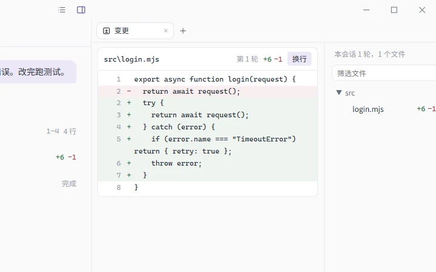
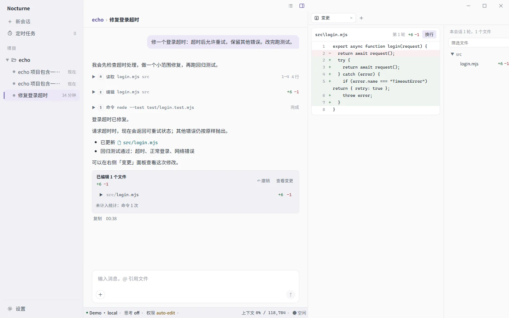
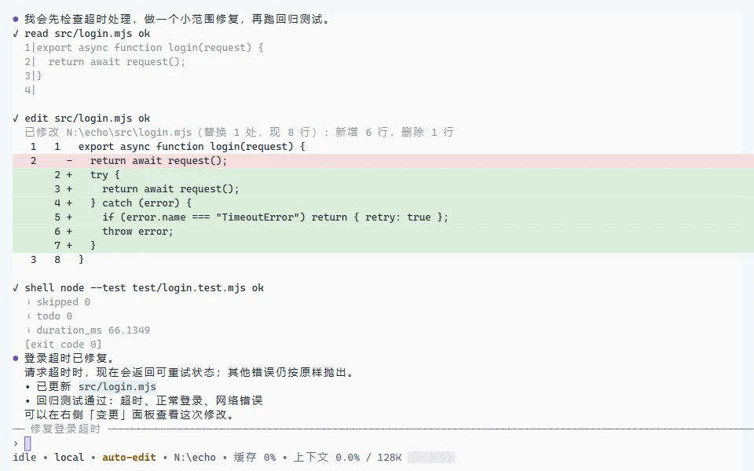
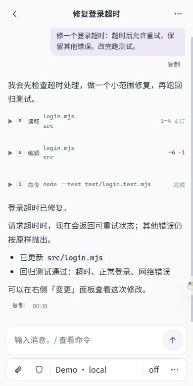

Windows 桌面版
右侧面板看文件、改动、终端和网页；设置里管理服务商、MCP、技能和子代理。

Nocturne 是在代码仓库里工作的编程助手。读代码、改文件、跑命令，都按你设定的权限来；每一步都记在本地会话里，可以恢复、回退、分叉。
Windows x64 · 全部版本
会话、服务商和权限配置共用一份，在哪儿开始都能在别处接着做。
右侧面板看文件、改动、终端和网页；设置里管理服务商、MCP、技能和子代理。

nctrn全屏界面、普通屏幕、逐行模式和一次性执行。

手机浏览器经中继接着做电脑上的会话，端到端加密。

服务商与模型。OpenAI 兼容、Anthropic、Responses、Gemini 原生协议；ChatGPT、Grok 账号登录；模型能力从上游和 models.dev 自动获取。
权限。六档预设加逐条规则，smart
预设先让审查模型把关，拿不准的才来问你。
子代理。把独立任务交给不同模型和思考档位，或委派给 omp、codex 等外部助手。
扩展。MCP 服务器、Hooks 和 Agent Skills，用
/技能名 参数 调用。
会话。自动压缩上下文；回退并撤销文件改动，从某条消息分叉。
改动。每轮文件改动汇总在一张卡片里，随时查看，也可以整轮撤销。
当前版本 v{{version}}
更新日志